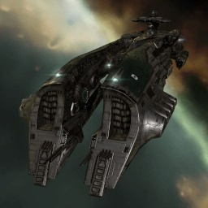

Megathron

Тип корабля: Линкор
Государство/Организация: Gallente
Примерная стоимость: 310.000.000 ISK
Описание
«Мегатрон» делом заслужил репутацию одного из самых устрашающих линкоров. К его мощи нельзя относиться с пренебрежением. Со времени ввода в строй два десятилетия назад линкоры этого класса достойно несли службу в пограничных секторах Галлентской Федерации, расширяя и укрепляя сферу влияния своего государства.
Характеристики
Корпус
Запас прочности корпуса: 8.250 ед.
Вместимость грузового отсека: 845 м^3
Объем отсека для дронов: 75 м^3
Пропускная способность канала телеуправления: 75 Мбит/с
Отсек спасательного фрегата: 1 ед.
Масса: 90.400.000 кг
Занимает объем: 470.000,0 м^3 (50.000,0 м^3 в разобранном виде)
Влияние инертности конструкции: 0,114x
Сопротивление корпуса ЭМ-урону: 33 %
Сопротивление корпуса термальному урону: 33 %
Сопротивление корпуса кинетическому урону: 33 %
Сопротивление корпуса фугасному урону: 33 %
Броня
Запас прочности брони: 7.150 ед.
Сопротивление брони ЭМ-урону: 50 %
Сопротивление брони термальному урону: 35 %
Сопротивление брони кинетическому урону: 35 %
Сопротивление брони фугасному урону: 10 %
Щит
Запас прочности щита: 6.930 ед.
Влияние на время регенерации щитов: 41 минут и 40 секунд
Сопротивление щита ЭМ-урону: 0 %
Сопротивление щита термальному урону: 20 %
Сопротивление щита кинетическому урону: 40 %
Сопротивление щита фугасному урону: 50 %
Сопротивление средствам РЭП
Сопротивление накопителя нейтрализирующему воздействию: 0 %
Сопротивление воздействию генератору стазис-поля: 0 %
Сопротивление воздействию помех на наводку вооружения: 0 %
Накопитель энергии
Емкость накопителя: 6.000,0 ГДж
Время востановления заряда: 19 минут и 10 секунд
Целеуказания
Максимальная дальность захвата цели: 87 км
Максимальное количество захваченных целей: 7
Радиус сигнатуры: 380 м
Разрешающая способность систем захвата цели: 124 мм
Эффективность радарной системы: -
Эффективность магнитнометрической системы: 21 ед.
Эффективность гравиметрической системы: -
Эффективность ладарной системы: -
Двигательная установка
Максимальная скорость: 122 м/с
Скорость в варп-режиме: 3,0 а.е./с.
Служба оснащения
Мощность ЦПУ: 600,0 Тф
Мощность реактора: 15.500 МВт
Калибровка: 400 ед.
Точки монтажа орудийных установок: 7
Точки монтажа пусковых установок: -
Разъемы большой мощности: 7
Разъемы средней мощности: 4
Разъемы малой мощности: 8
Разъемы под установку тюнинг-модулей: 3